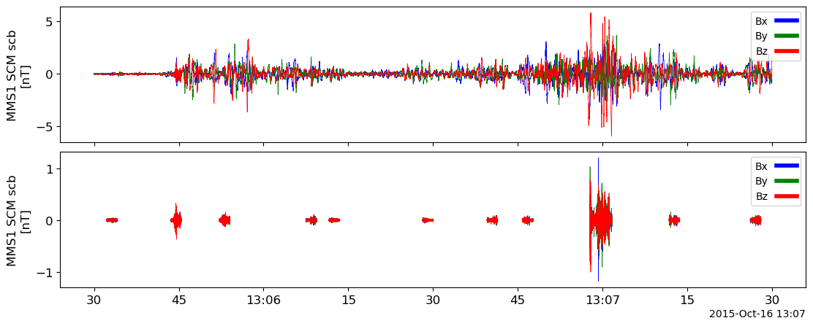

Code
import pyspedas
from pytplot import tplot, get_dataNASA’s Science Mission Directorate (SMD) held its Fall Quarterly town hall meeting with the public. The event was led by NASA’s Associate Administrator for Science, Dr. Nicky Fox, and representatives of all SMD Divisions who answered questions submitted by the public on October 19. This one-hour event was advertised in advance at smd@listsrv2.nasaprs.com (enlist if you like). Watch the recorded video from that here.
- How does NASA deal with starts for new missions, like UOP, if budgets are tight?
- How does NASA deal with continuing resolutions (CRs) and with government shutdowns?
- How will NASA/Biological Physical sciences respond to its recent NAS Decadal Survey?
- What are the 2 most interesting science highlights presented by the various divisions?
Generally, NASA will reallocate budget: it may adjust its portfolio to prioritize high-priority missions. This could mean delaying or scaling back other projects or seeking additional funds specifically earmarked for the mission. For Uranus Orbiter and Probe (UOP) specifically, NASA most likely will not initialize it in the next few years.
During a Continuing Resolution, NASA can generally continue its operations at funding levels approved in the previous fiscal year but cannot start new projects and pend the amount of fundings. In the case of a government shutdown, non-essential operations are suspended, and only critical mission operations, like support for the International Space Station and maintaining mission properties. Scheduled launches will be postponed and administrative functions will be suspended.
NASA’s Biological and Physical Sciences division would typically use the recommendations from the National Academies of Sciences (NAS) Decadal Survey to shape its research agenda. The division will hold a townhall which shares and discusses their responds. The survey is influential in determining funding priorities and research directions. The agency may: adjust its research priorities, reallocate resources and personnel as identified in the survey.
Highlights
For a day/time of interestNote1 from THEMIS or MMS, based on your perusal of the overview plots at the mission website, and using standard tools:
- Plot SCM time-series data in 2 different coordinate systems: one that you introduce from L2 files and one you create by rotating the data using cotrans (e.g., GSE and SM coord’s).
- Do a time-series spectrogram of a SCM component in some geophysical coordinates in survey and burst mode up to a high frequency, several kHz (use waveburst from THEMIS or “hb” from MMS).
- Select a time when the geophysical signal (plasma waves) is at minimum (a quiet period) by looking at the dynamic power spectrum first. Compare the quiet time spectrum (a line spectrum) plot with published instrument noise curves: Point out the characteristic noise curve, a decreasing noise density as a function of frequency at low frequencies, a minimum near the resonance, and an increasing noise level at high frequencies – does it match expectation? Can you point out the plasma waves in the dynamic power spectrum?
Note1: A good day for THEMIS is the first results Space Sci. Rev. paper (2007-03-23 13-16UT,) or the first Science paper (2008-02-26 4- 6UT) from any THEMIS spacecraft. A good day for MMS is the first Science paper (2015-10-16 13:00-14:00UT) from any MMS spacecraft.
We choose MMS for this question. And the data is from 2015-10-16 13:00-14:00UT.
Its overall summary plot together with SCM quicklook plots are shown below.


References:
import pyspedas
from pytplot import tplot, get_datatime_range = ['2015-10-16T13:05:30', '2015-10-16T13:07:30']
tvars = pyspedas.mms.scm(trange=time_range, data_rate='brst', time_clip=True, probe='1')
tplot(tvars)03-Nov-23 23:04:53: Loading /Users/zijin/data/mms/mms1/scm/brst/l2/schb/2015/10/16/mms1_scm_brst_l2_schb_20151016130524_v2.2.0.cdf
03-Nov-23 23:04:53: Loading /Users/zijin/data/mms/mms1/scm/brst/l2/scb/2015/10/16/mms1_scm_brst_l2_scb_20151016130524_v2.2.0.cdf
03-Nov-23 23:04:57: Time clip was applied to: mms1_scm_acb_gse_scb_brst_l2
03-Nov-23 23:04:57: Time clip was applied to: mms1_scm_acb_gse_schb_brst_l2
03-Nov-23 23:04:57: Loaded variables:
03-Nov-23 23:04:57: mms1_scm_acb_gse_scb_brst_l2
03-Nov-23 23:04:57: mms1_scm_acb_gse_schb_brst_l2
tvars_sm = []
coord_out = 'sm'
for tvar in tvars:
pyspedas.cotrans(tvar, coord_out=coord_out)
tvar_sm = tvar + '_' + coord_out
tvars_sm.append(tvar_sm)
tplot(tvars_sm)03-Nov-23 23:04:58: ['gse', 'gsm', 'sm']
03-Nov-23 23:05:01: Running transformation: subgse2gsm
03-Nov-23 23:05:03: Running transformation: subgsm2sm
03-Nov-23 23:05:03: Output variable: mms1_scm_acb_gse_scb_brst_l2_sm
03-Nov-23 23:05:03: ['gse', 'gsm', 'sm']
03-Nov-23 23:05:04: Running transformation: subgse2gsm
03-Nov-23 23:05:05: Running transformation: subgsm2sm
03-Nov-23 23:05:05: Output variable: mms1_scm_acb_gse_schb_brst_l2_sm
tvar_tdpwrspc = pyspedas.tdpwrspc('mms1_scm_acb_gse_schb_brst_l2_sm')
tplot(tvar_tdpwrspc[0])
tvar_tdpwrspc = pyspedas.tdpwrspc('mms1_scm_acb_gse_scb_brst_l2_sm')
tplot(tvar_tdpwrspc)The SCM provides the three components of the magnetic fluctuations in the 1 Hz – 6 kHz nominal frequency range. The noise equivalent magnetic induction (NEMI or sensitivity) of the search-coil antenna is less than or equal to : 2 pT/sqrt(Hz) at 10 Hz, 0.3 pT/sqrt(Hz) at 100 Hz and 0.05 pT/sqrt(Hz) at 1 kHz (Fig. 6). The SCM resolution at 1k Hz is 0.15pT.


import matplotlib.pyplot as plt
import numpy as npFrom quickplot, we visually find the quiet time is around 2015-10-16T13:06:16. It mathchs expectation and looks quite like the NEMI from publications : resonance near 1kz with minimum noise level, together with a decreasing noise density at low frequencies, and an increasing noise level at high frequencies.
From the quickplot spectrum, we can see there are some waves of 50-200 Hz between 13:06:50 and 13:07:00. Also observed is weak wave near 800 hz before 13:05:40.
data = get_data(tvar_tdpwrspc[0], xarray=True)
quiet_time_data = data.sel(time='2015-10-16T13:06:16')
fig, ax = plt.subplots()
ax.loglog(quiet_time_data.spec_bins.data[0], np.sqrt(quiet_time_data.data[0])*1000)
ax.set_xlabel("Freq (Hz)")
ax.set_ylabel("NEMI (pT/sqrt(Hz))")
plt.show()